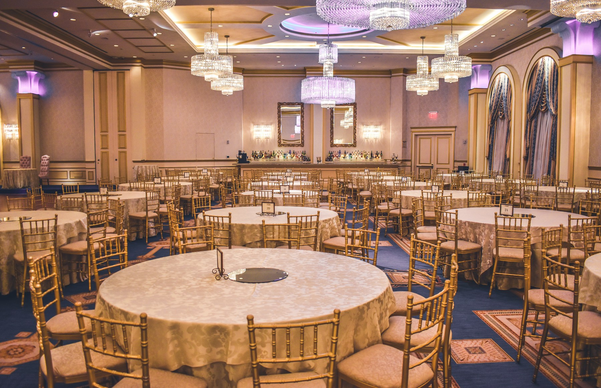

Partnerský profil
Sála pod lustrami
Západné Slovensko · do 140 hostí

Dobrý príbeh potrebuje správne miesto.
Nájdite miesto, v ktorom si viete predstaviť svoj deň.
Nájsť ten správny priestorMiesta, ktoré stoja za pozretie
Od prvého dojmu k detailom, ktoré rozhodujú.
2 ilustračné priestory. Fotografie nepredstavujú konkrétne slovenské prevádzky.
Skúste inú lokalitu alebo počet hostí.
Aby sa vám ľahšie rozhodovalo
Priestor je začiatok. Potom potrebujete vedieť, čo je možné a s kým sa dohodnúť.
V pripravovanom katalógu nájdete priestory podľa lokality, kapacity a typu podujatia. Mapa pomôže porovnať aj okolie.
Partnerský profil môže pridať podrobnosti, dopyt a pôdorys. Bežný záznam v katalógu vás spojí priamo s prevádzkou.
Vyberiete jeden deň alebo rozsah dátumov. Dostupnosť a konečnú cenu potvrdzuje prevádzka. Ak nie je odhad, požiadate o ponuku.
Máte vlastný priestor?
Pre ľudí, ktorí tvoria zážitky
Od prvého objavenia po dohodnuté podujatie. Hallify pripravuje miesto pre celý príbeh vašej prevádzky.
Vyskúšať cestu dopytuJeden priestor. Celá cesta.
Kliknite si cestu jedného ukážkového podujatia.
Interaktívna ukážka plánovaného prepojenia katalógu a správy prevádzky. Údaje sa neukladajú ani neodosielajú.
Priestor aj pre váš začiatok
Katalóg môže rásť spolu s tým, čo vaša prevádzka potrebuje.
Základné predstavenie priestoru, lokalita a kontakt. Návštevník vás nájde a dohodne sa priamo s vami.
Bohatší profil a prepojenie s nástrojmi na dopyty, termíny a usporiadanie podujatí podľa dohody.
Váš priestor je len začiatok
Vyberte si cestu, ktorá dáva vašej prevádzke zmysel.